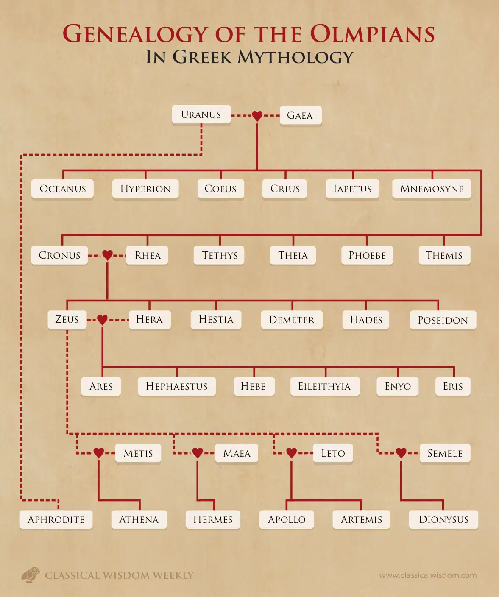

ბერძნული მითოლოგია წარმოადგენს ერთ-ერთ ყველაზე აღიარებულ და საინტერესო მითოლოგიურ სისტემას, რომელიც ასახავს ბერძნულ ცივილიზაციის რელიგიურ და კულტურულ შეხედულებებს. ის მოიცავს ღვთაებების, გმირების, და სხვადასხვა მითოლოგიურ არსებებსა და ამბებს, რომლებიც ცალკე ისტორიულ ლეგენდებსა და მტკიცებულებებში გადმოცემულა.
გმირები
ბერძნული მითოლოგია მდიდარია გმირების ისტორებით, რომლებიც სხვადასხვა თავგადასავლებზე მოგზაურობდნენ. თითოეული მათგანის ისტორია მნიშვნელოვან შეტყობინებებს შეიცავდა, რომლებიც ახსნიდნენ ძალასა და გმირობას.
ჰერაკლე
ჰერაკლე იყო ერთ-ერთი ყველაზე ცნობილი გმირი ბერძნული მითოლოგიაში. მისი თავგადასავალი ასახავდა მისი უდიდესი ძალის, ჭკუის და გაუნათლებლობის შორის ბრძოლას.

პერსეისი
პერსეისი იყო ერთ-ერთი ყველაზე ცნობილი ბერძნული გმირი, რომელიც დაამარცხა გორგონა მედუზა და ჩამოიყვანა მისი თავი, რათა გადაარჩინოს მშობლიური ქალაქი.